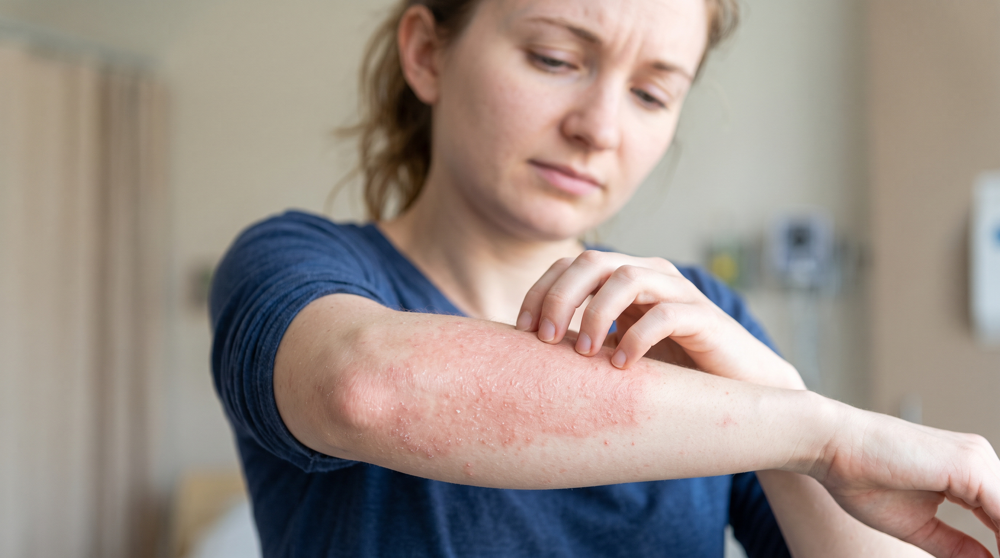
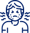
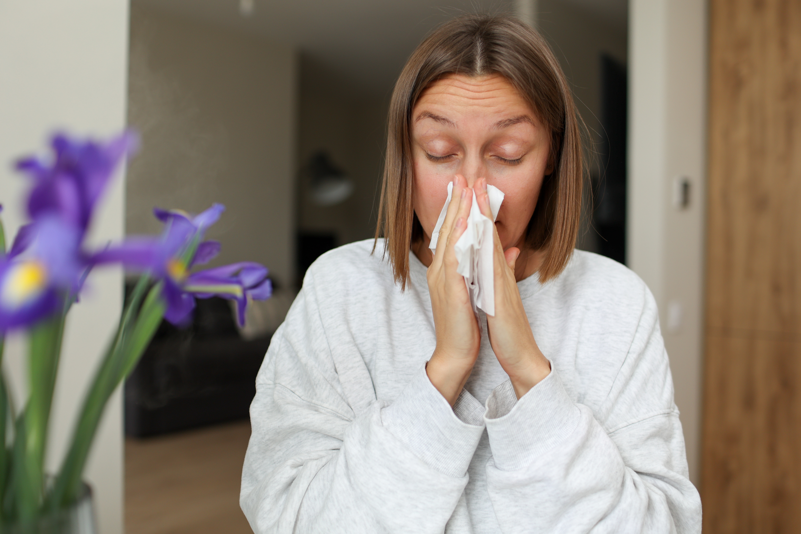
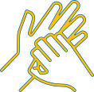
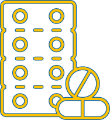

CID L50.1
Urticária Crônica Espontânea (UCE)
Entenda os sintomas, as causas e como controlar a doença.
O que é Urticária Crônica Espontânea?
A Urticária Crônica Espontânea (UCE), anteriormente chamada de urticária crônica idiopática, é caracterizada pelo aparecimento diário ou quase diário de urticas e/ou angioedema por mais de seis semanas, sem que as manifestações sejam provocadas por alimentos, cosméticos, produtos de limpeza ou outro fator externo identificável.1
Ao contrário do que muitas pessoas imaginam, as lesões aparecem espontaneamente. A doença está relacionada a mecanismos do próprio organismo, envolvendo a ativação do sistema imunológico e dos mastócitos, células que liberam substâncias como a histamina na pele.1,2
A imprevisibilidade das crises pode interferir significativamente na rotina, no sono, nos relacionamentos e na qualidade de vida.3-7
O que são urticas e angioedema?
Urticas
As urticas são lesões elevadas na pele, geralmente acompanhadas por vermelhidão e coceira intensa.
Uma característica importante é que cada lesão permanece no mesmo local por, no máximo, cerca de 24 horas, podendo desaparecer e surgir posteriormente em outras regiões do corpo.1,8
A coceira pode ser tão intensa que interfere no sono e em atividades cotidianas, como estudar, trabalhar ou manter atividades sociais.3-5

Angioedema
O angioedema é um inchaço que ocorre em camadas mais profundas da pele.
Pode aparecer em diferentes partes do corpo e tende a estar mais associado à dor do que à coceira. Quando ocorre no rosto, pode causar importante alteração da aparência e desconforto.1,8
O angioedema pode surgir rapidamente e permanecer por até 72 horas. Algumas pessoas apresentam apenas urticas, outras somente angioedema e há também quem apresente as duas manifestações.1,6,8
UCE e alergia são a mesma coisa?
Apesar de apresentarem algumas características semelhantes, a UCE geralmente não é uma doença alérgica.9

Alergia
Em uma alergia, uma substância externa normalmente inofensiva, como pólen, poeira ou pelos de animais, desencadeia uma resposta exagerada do sistema imunológico.
Nessa reação, mastócitos podem ser ativados e liberar substâncias como a histamina.10
UCE
Na UCE também ocorre ativação de mastócitos e liberação de histamina, mas não existe necessariamente um agente externo desencadeante.6,11
Em cerca de 67% dos casos de urticária crônica, mesmo após investigação clínica, não é identificado um agente externo responsável pelas lesões. Nesses casos, a condição é classificada como urticária crônica espontânea.9,11
Por isso, buscar continuamente um alimento, cosmético ou produto como responsável pela doença pode levar a restrições desnecessárias e mudanças importantes na rotina.6
Por que a UCE causa tanta coceira?
A coceira é uma das manifestações mais incômodas da UCE e está relacionada principalmente à atuação da histamina e de outros mediadores liberados na pele.12
Na UCE, ocorre uma ativação anormal do sistema imunológico. Como parte desse processo, os mastócitos liberam histamina, que ativa terminações nervosas da pele e desencadeia a sensação de coceira.1,12,13
A coceira pode interferir diretamente no sono e, consequentemente, provocar irritabilidade e impacto nas atividades do dia seguinte.3

Coçar a pele pode proporcionar alívio temporário, mas não trata a causa do sintoma.
Por isso, a avaliação médica é importante para estabelecer a melhor estratégia de controle.
"Urticária nervosa" existe?
A UCE não é causada pelas emoções.
A doença está relacionada a alterações do sistema imunológico, e não a um problema psicológico.1,2
No entanto, o estresse emocional pode piorar ou intensificar as manifestações em algumas pessoas. Isso é diferente de afirmar que o estresse seja a causa da doença.1,2
Além disso, a própria imprevisibilidade das crises, a coceira, a perda de sono e o impacto da doença na rotina podem favorecer sofrimento emocional, ansiedade e depressão.3-7
Por isso, ansiedade e outros impactos emocionais podem ser uma consequência da convivência com a UCE, e não sua causa.
Como a UCE pode afetar a qualidade de vida?
A UCE vai muito além das manifestações visíveis na pele. A imprevisibilidade das urticas e do angioedema pode afetar atividades sociais, compromissos profissionais, viagens, relacionamentos e vida íntima.3-7
A coceira pode prejudicar o sono, enquanto as lesões visíveis e o angioedema podem gerar constrangimento e isolamento social.3-6
A preocupação sobre quando acontecerá a próxima crise também pode limitar atividades e gerar insegurança. Por isso, o objetivo do cuidado não deve ser apenas diminuir algumas lesões, mas buscar um controle que permita manter a rotina com o menor impacto possível.1,6
Como acompanhar os sintomas da UCE?
Monitorar a doença ajuda o paciente e o médico a compreenderem de forma mais objetiva a intensidade dos sintomas e seu impacto na qualidade de vida.
Uma das ferramentas utilizadas é o UAS7,
Escore de Atividade da Urticária em 7 dias. Ele permite acompanhar a atividade da doença ao longo de uma semana e pode ajudar a avaliar a resposta ao tratamento.1
Outra ferramenta é o DLQI,
Índice de Qualidade de Vida em Dermatologia, utilizado para avaliar quanto uma condição dermatológica interfere na vida cotidiana.14
O acompanhamento periódico desses indicadores pode tornar a conversa com o médico mais objetiva e ajudar a verificar se o tratamento está proporcionando o controle esperado.
Qual é o objetivo do tratamento da UCE?
A diretriz internacional para urticária estabelece que o objetivo do tratamento é alcançar o controle completo dos sinais e sintomas. Isso significa buscar ausência de urticas, coceira e angioedema.1
O tratamento segue uma abordagem por etapas. Segundo a diretriz, a primeira linha envolve o uso de anti-histamínicos de segunda geração, na dose aprovada, sob orientação médica.1
Após o início do tratamento, a resposta* deve ser reavaliada. Caso o controle adequado não seja alcançado, o médico pode avançar para as etapas seguintes previstas na estratégia terapêutica.1
*O UAS7 pode ser utilizado para acompanhar essa resposta.
Na diretriz apresentada pela Novartis, um UAS7 igual ou inferior a 6 indica controle adequado da doença.1 A estratégia deve sempre ser individualizada e conduzida pelo especialista.

Corticoides podem ser usados continuamente?
A diretriz internacional apresenta uma recomendação forte contra o uso contínuo de corticoides para a UCE.1
Isso reforça a importância de não se automedicar e de procurar um alergista/imunologista ou dermatologista quando os sintomas não estiverem adequadamente controlados.
Com o tratamento adequado, até 92% das pessoas com UCE podem alcançar controle completo dos sintomas, de acordo com a publicação utilizada como referência pelos conteúdos da Novartis.15
8 cuidados que podem ajudar a viver melhor com urticária crônica
1. Siga corretamente o tratamento
Mesmo quando as manifestações não estão visíveis, mantenha as medicações conforme a orientação médica.6,16
2. Evite automedicação
Alguns analgésicos e anti-inflamatórios podem agravar a urticária em determinadas pessoas.17
3. Mantenha-se ativo
Caso a urticária limite a prática de exercícios, converse com o médico para avaliar possíveis ajustes.
4. Observe situações que pioram seus sintomas
Aumento da temperatura corporal, calor, estresse e bebidas alcoólicas podem agravar a doença em algumas pessoas.6,16
5. Observe a relação com alimentos
Os alimentos não são considerados a causa da UCE, mas determinadas pessoas podem perceber piora após alguns alimentos. Essa percepção deve ser discutida com o médico antes de realizar restrições alimentares.6,16
6. Prefira uma alimentação equilibrada
As evidências não demonstram uma relação direta entre aditivos alimentares e exacerbações da urticária crônica em todos os pacientes.18
7. Cuide do estresse
Ele não causa a UCE, mas pode piorar os sintomas. Reservar momentos para descanso e atividades prazerosas pode contribuir para o bem-estar.6,16
8. Monitore a doença
Ferramentas como UAS7 e DLQI podem auxiliar na avaliação dos sintomas e da qualidade de vida.1,14

Não espere os sintomas piorarem!
Quando procurar um especialista?
Lesões avermelhadas e elevadas, coceira e/ou episódios de angioedema que se repetem por mais de seis semanas, sem um fator externo claramente identificado, devem ser avaliados por um profissional de saúde.1
Os especialistas mais diretamente envolvidos no cuidado da UCE são o alergista/imunologista e o dermatologista.
Para quem já recebeu o diagnóstico, manter consultas regulares, acompanhar os sintomas e informar quando a doença continua interferindo no sono, trabalho, vida social ou relacionamentos são passos importantes para avaliar se o controle esperado está sendo alcançado.1,6
Artigos relacionados
Referências
1. Zuberbier T, Abdul Latiff AH, Abuzakouk M, et al. The international EAACI/GA²LEN/EuroGuiDerm/APAAACI guideline for the definition, classification, diagnosis, and management of urticaria. Allergy. 2022.
2. Kaplan AP. What the first 10,000 patients with chronic urticaria have taught me: a personal journey. J Allergy Clin Immunol. 2009;123(3):713–717.
3. O'Donnell BF, Lawlor F, Simpson J, Morgan M, Greaves MW. The impact of chronic urticaria on the quality of life. Br J Dermatol. 1997;136(2):197–201.
4. Kang MJ, Kim HS, Kim HO, et al. The impact of chronic idiopathic urticaria on quality of life in Korean patients. Ann Dermatol. 2009;21:226–229.
5. Silvares MR, Fortes MR, Miot HA. Quality of life in chronic urticaria: a survey at a public university outpatient clinic, Botucatu (Brazil). Rev Assoc Med Bras. 2011;57(5):577–582.
6. Maurer M, Weller K, Bindslev-Jensen C, et al. Unmet clinical needs in chronic spontaneous urticaria. A GA²LEN task force report. Allergy. 2011;66:317–330.
7. Vietri J, Turner SJ, Tian H, et al. Effect of chronic urticaria on US patients: analysis of the National Health and Wellness Survey. Ann Allergy Asthma Immunol. 2015;115(4):306–311.
8. Giménez-Arnau AM, Grattan C, Zuberbier T, et al. An individualized diagnostic approach based on guidelines for chronic urticaria (CU). J Eur Acad Dermatol Venereol. 2015;29 Suppl 3:3–11.
9. Augey F, Gunera-Saad N, Bensaid B, et al. Chronic spontaneous urticaria is not an allergic disease. Eur J Dermatol. 2011;21(3):349–353.
10. Allergy UK. What is an allergy? Acesso em maio de 2025.
11. Zuberbier T, Aberer W, Asero R, et al. The EAACI/GA²LEN/EDF/WAO Guideline for the Definition, Classification, Diagnosis and Management of Urticaria. The 2017 Revision and Update. Allergy. 2018.
12. Hennino A, et al. Pathophysiology of urticaria. Clin Rev Allergy Immunol. 2006;30(1):3–11.
13. Kaplan AP. Treatment of chronic spontaneous urticaria. Allergy Asthma Immunol Res. 2012;4(6):326–331.
14. Finlay AY, Khan GK. Dermatology Life Quality Index (DLQI) — a simple practical measure for routine clinical use. Clin Exp Dermatol. 1994;19(3):210–216.
15. Kaplan AP. Therapy of chronic urticaria: a simple, modern approach. Ann Allergy Asthma Immunol. 2014;112(5):419–425.
16. Zuberbier T, et al. The EAACI/GA2LEN/EDF/WAO Guideline for the definition, classification, diagnosis, and management of urticaria: the 2013 revision and update. Allergy. 2014;69(7):868–887.
17. Godse KV. Chronic urticaria and treatment options. Indian J Dermatol. 2009;54(4):310–312.
18. Rajan JP, et al. Prevalence of sensitivity to food and drug additives in patients with chronic idiopathic urticaria. J Allergy Clin Immunol Pract. 2014;2(2):168–171.
Material destinado ao público leigo. 2026 © Direitos Reservados Novartis Biociências S/A – Proibida a reprodução total ou parcial não autorizada. Atualizado em 28 de agosto de 2026.
BR-XXXXX